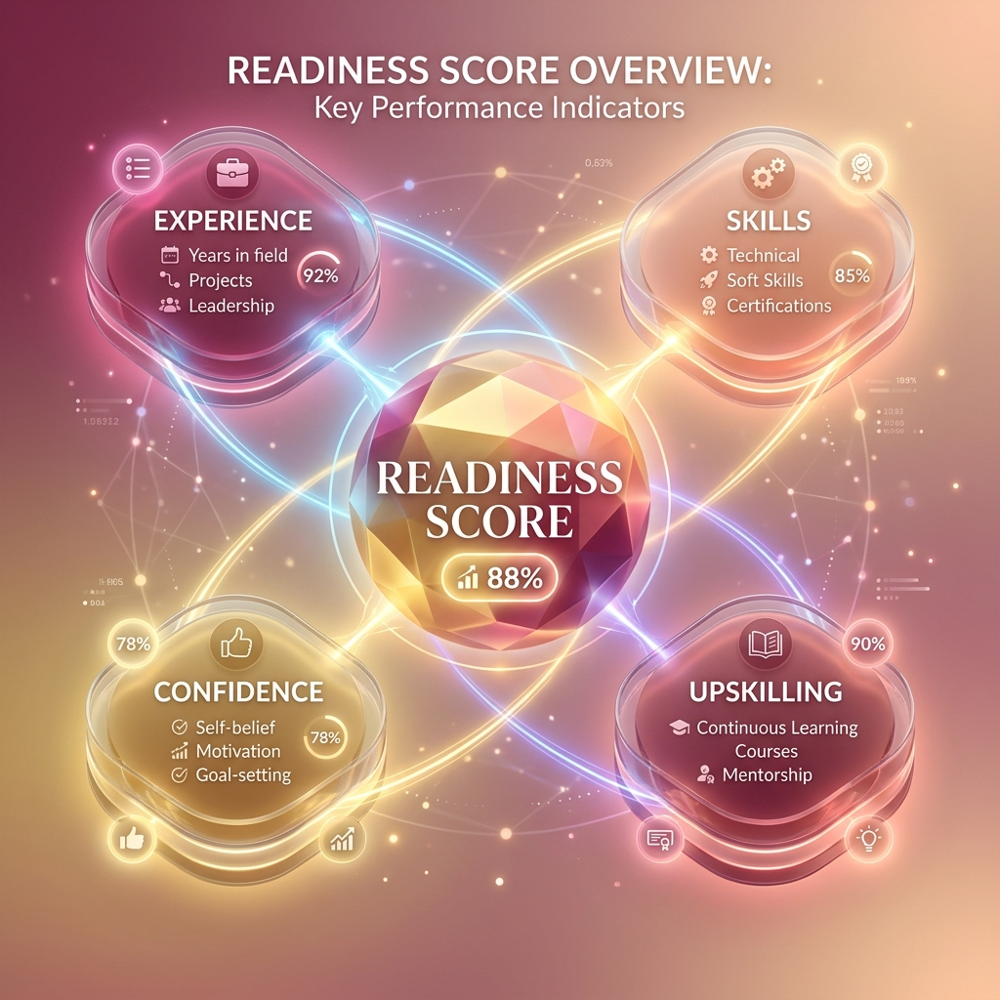

AI-Driven Career Re-Entry Platform for Women
CSE 306 – Software Engineering and Project Management
Under the supervison of Prof Vishnu Prasad Varma
SRM University, AP | April 2026
Career gaps are often treated as liabilities, not transitions. Women returning to work face:
A multi-layered ecosystem designed to transform career anxiety into structured action.
We move beyond "Years of Experience" to a holistic Readiness Index:

Soft skills, core tech refresh, and community connection.
Project building, advanced certifications, and mentorship.
Mock interviews, returnship applications, and placement focus.
Breaking the language barrier for skilled talent across India.
Chosen for rapid prototyping and risk mitigation.
"From a 'Gap' on a resume to a 'Launch' in a career."
Questions?
ReLaunchHer V1.0